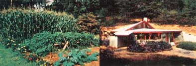

Here's a chance to share your success with other readers and maybe win some cash, too
As we've often said in the past, the people who write the best articles for MOTHER are, more often than not, the very same people who read this magazine. In fact, to a large extent MOM functions as a sort of bulletin board, allowing you folks to pass along information about your successes and failures . . . and to learn from each other's mistakes and triumphs. Furthermore, we've always known that there's more knowledge in our pool of hands-on experts (that is, you people) than shows up here in the form of manuscripts. After all, it's one thing to know your way around a garden or construction site, but it's often another thing entirely to have the confidence to sit down and try to put that information in the form of an article. So, in an effort to mine that till now untapped vein of expertise, we've decided to sponsor the following contests, and you don't need to be a trained journalist to enter. If you do enter, you can have the satisfaction of helping others duplicate your home-building or gardening successes and perhaps win a cash prize to boot!
Our first contest ought to provide a little nudge of inspiration to all of you backyard gardeners (according to our latest survey, that includes more than 86% of the people who read MOTHER). We'll be looking for the best individual or family-size food gardens we can find. Our judging standards will, of course, have to be somewhat subjective-taking into account the fact that people's gardening aims vary-but, in general, we're looking for plots that are [I] space-efficient, [2] sized to feed the individual or family tending them (sorry, community and organization gardens are not eligible), [3] capable of producing a variety of foods (as well as, perhaps, some herbs and flowers), and, of course, [4] grown without toxic pesticides, herbicides, or petroleum-based (or otherwise non-organic, synthesized) fertilizers.
We'll award a check for $300 to the winner and $50 to each of the four runners-up. (If no plot stands clearly above the rest, we'll simply give the top five finishers $100 apiece.) In addition, all of the semifinalists will receive a free one-year subscription to THE Mother Earth News.
To enter, submit-by May 1-a complete plan for your 1985 garden. This should include a diagram showing the spatial layout of your plot (with dimensions) and a thorough written explanation of the design (giving the reasons behind your plan, what succession plantings, if any, you'll be making, the goals for your garden, and so forth).
We'll pick our semifinalists from among the designs submitted and notify those contestants that they'll need to send us a roll of color slides-by July 7-in order to allow us to see how the gardens are coming along.
Then MOTHER will choose five finalists, contact those lucky gardeners, and arrange to visit their plots to make the final judging in person. And, of course, we'll share the results in a future issue so we can all use the winning gardeners' knowledge to better our own horticultural efforts!
Our second contest aims to reward those of you who are breaking new ground in the design of low-cost dwellings. To qualify, a home must [1] have at least 1,500 square feet of living area, [2] have been occupied by the end of 1984, [3] not have appeared in a previous issue of MOTHER, [4] have been built for a material cost (labor not included) of no more than $15 per square foot, and [5] be able to satisfy a "reasonable" building code. (Again, much of the judging will, by necessity, be subjective.)
To enter, just send us-by May 1-color slides of the home's interior and exterior, a dimensional floor plan, a summary of the house's material cost and its total cost, a brief description of the dwelling, and its date of completion. We'll select three semifinalists from the entries, and that trio will be eligible for either a $500 first prize, a $300 second prize, or a $200 third prize. (The semifinalists will, of course, have to provide additional information prior to the final judging.)
To determine our winners, Master Architect Angus Macdonald will judge the homes for soundness. Then, in addition to having to meet our low-cost criterion, the entries will be scored on such things as comfort and finish, originality of design, durability, aesthetics, and energy efficiency. Finally, the top three homes will be featured in upcoming issues of MOTHER . . . and ought to provide a cornucopia of good ideas for those of us who plan to design our own houses someday but still aren't past the "dreaming" stage!
EDITOR'S NOTE: Incidentally, those of you who've enjoyed Angus Macdonald's previous articles in MOTHER-in issues 67, 74, and 81-86-will be glad to know that we've recently published his book, Building Your Own Earth-Tempered Home: A Construction Man ual. Copies can be ordered for $9.95 plus $1.50 shipping and handling from Mother's Book shelf, 105 Stoney Mountain Rd., Hendersonville, NC 28791.
|
 LEFT TO RIGHT: Your well-planned, productive, one-person or single-family food garden... or well-designed, low-cost (MOTHER's low-cost shelter is shown here) ... can win you cash and be featured in a future issue of MOTHER! |
|
|